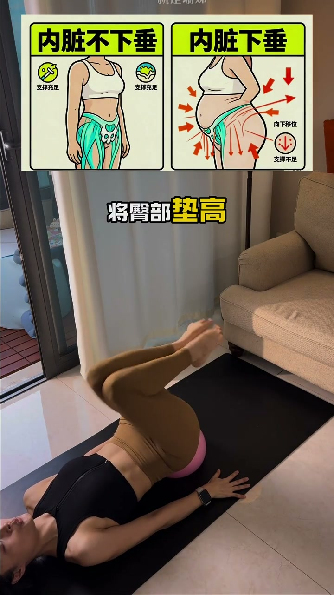
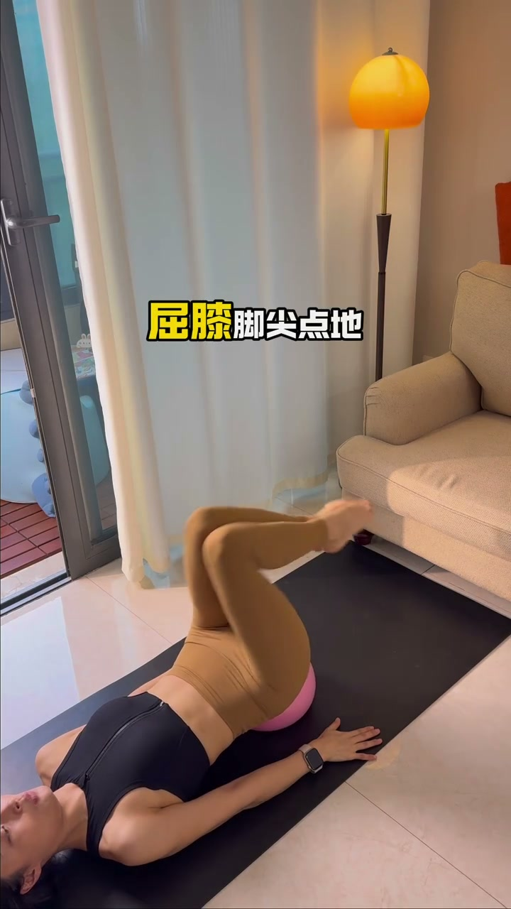
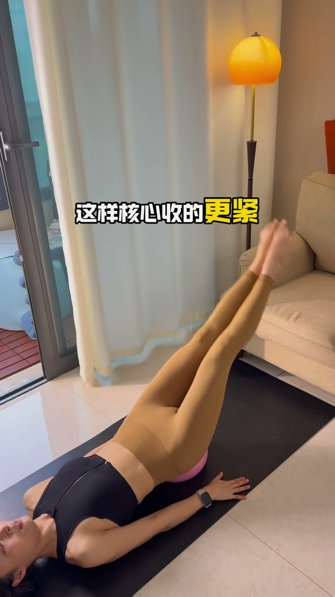
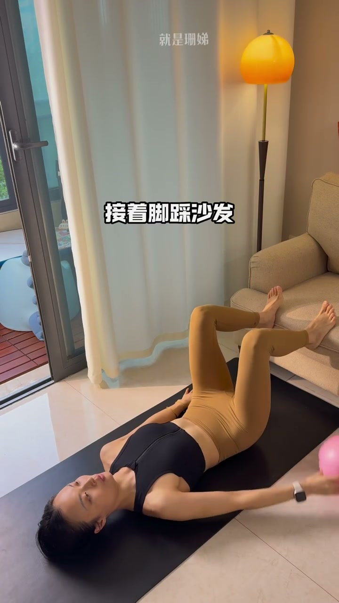
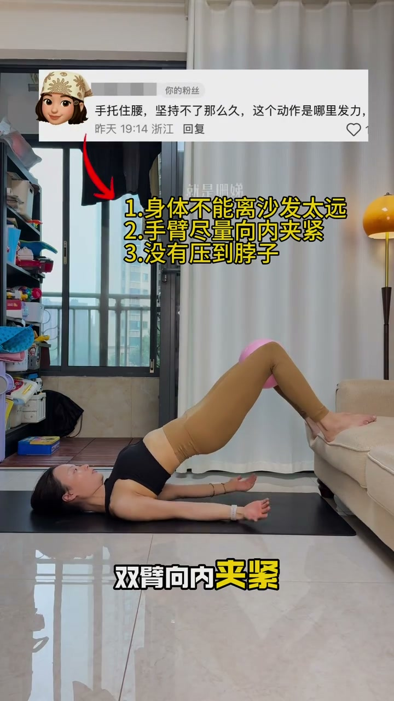
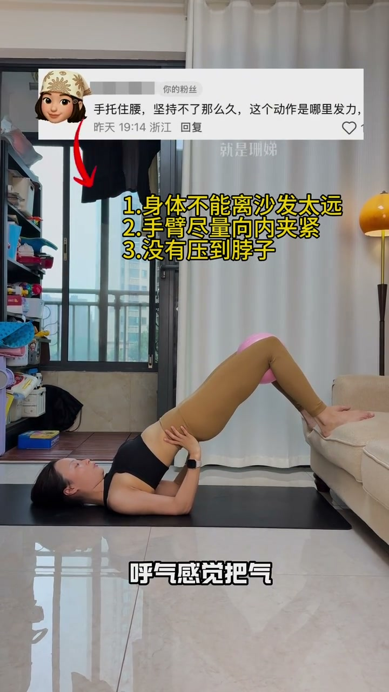

动作一：垫高臀部，呼气收腹抬腿
00:06将臀部垫高，腹部收紧，屈膝、脚尖点地。
00:10配合呼吸发力：吸气下落，呼气收腹腿抬高。
00:14有基础的把腿伸直，这样核心收得更紧，效果也会更好。



动作二：夹瑜伽球，练盆底肌
00:18接着脚踩沙发，双腿夹住瑜伽球，臀部向上抬高，双臂向内夹紧，手臂呈三角稳定支撑。
00:26吸气：腹部隆起，整个腹部、盆底都放松。
00:30呼气：感觉把气全部吐出去，双腿向内夹紧瑜伽球，感受盆底肌收紧发力。



悬垂腹、腹内压过大不用着急卷腹——垫高臀部收腹抬腿+夹球桥式练盆底，两个躺练动作配合呼吸，躺着就能改善。